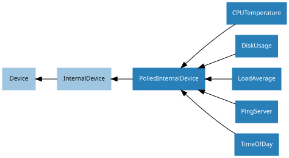

18. API - Internal Devices
GPIO Zero also provides several “internal” devices which represent facilities provided by the operating system itself. These can be used to react to things like the time of day, or whether a server is available on the network.
These devices provide an API similar to and compatible with GPIO devices so that
internal device events can trigger changes to GPIO output devices the way input
devices can. In the same way a Button object is active when
it’s pressed, and can be used to trigger other devices when its state changes,
a TimeOfDay object is active during a particular time period.
Consider the following code in which a Button object is used
to control an LED object:
from gpiozero import LED, Button
from signal import pause
led = LED(2)
btn = Button(3)
btn.when_pressed = led.on
btn.when_released = led.off
pause()
Now consider the following example in which a TimeOfDay object is used
to control an LED using the same method:
from gpiozero import LED, TimeOfDay
from datetime import time
from signal import pause
led = LED(2)
tod = TimeOfDay(time(9), time(10))
tod.when_activated = led.on
tod.when_deactivated = led.off
pause()
Here, rather than the LED being controlled by the press of a button, it’s controlled by the time. When the time reaches 09:00AM, the LED comes on, and at 10:00AM it goes off.
Like the Button object, internal devices like the
TimeOfDay object has value,
values, is_active,
when_activated and when_deactivated
attributes, so alternative methods using the other paradigms would also work.
Note
Note that although the constructor parameter pin_factory is available
for internal devices, and is required to be valid, the pin factory chosen
will not make any practical difference. Reading a remote Pi’s CPU
temperature, for example, is not currently possible.
18.1. Regular Classes
The following classes are intended for general use with the devices they are named after. All classes in this section are concrete (not abstract).
18.1.1. TimeOfDay
- class gpiozero.TimeOfDay(*args, **kwargs)[source]
Extends
PolledInternalDeviceto provide a device which is active when the computer’s clock indicates that the current time is between start_time and end_time (inclusive) which aretimeinstances.The following example turns on a lamp attached to an
Energenieplug between 07:00AM and 08:00AM:from gpiozero import TimeOfDay, Energenie from datetime import time from signal import pause lamp = Energenie(1) morning = TimeOfDay(time(7), time(8)) morning.when_activated = lamp.on morning.when_deactivated = lamp.off pause()
Note that start_time may be greater than end_time, indicating a time period which crosses midnight.
- Parameters:
start_time (time) – The time from which the device will be considered active.
end_time (time) – The time after which the device will be considered inactive.
utc (bool) – If
True(the default), a naive UTC time will be used for the comparison rather than a local time-zone reading.event_delay (float) – The number of seconds between file reads (defaults to 10 seconds).
pin_factory (Factory or None) – See API - Pins for more information (this is an advanced feature which most users can ignore).
- property end_time
The time of day after which the device will be considered inactive.
- property is_active
Returns
Trueif the device is currently active andFalseotherwise. This property is usually derived fromvalue. Unlikevalue, this is always a boolean.
- property start_time
The time of day after which the device will be considered active.
- property utc
If
True, use a naive UTC time reading for comparison instead of a local timezone reading.
- property value
Returns
1when the system clock reads betweenstart_timeandend_time, and0otherwise. Ifstart_timeis greater thanend_time(indicating a period that crosses midnight), then this returns1when the current time is greater thanstart_timeor less thanend_time.
- when_activated
The function to run when the device changes state from inactive to active (time reaches start_time).
This can be set to a function which accepts no (mandatory) parameters, or a Python function which accepts a single mandatory parameter (with as many optional parameters as you like). If the function accepts a single mandatory parameter, the device that activated it will be passed as that parameter.
Set this property to
None(the default) to disable the event.
- when_deactivated
The function to run when the device changes state from active to inactive (time reaches end_time).
This can be set to a function which accepts no (mandatory) parameters, or a Python function which accepts a single mandatory parameter (with as many optional parameters as you like). If the function accepts a single mandatory parameter, the device that activated it will be passed as that parameter.
Set this property to
None(the default) to disable the event.
18.1.2. PingServer
- class gpiozero.PingServer(*args, **kwargs)[source]
Extends
PolledInternalDeviceto provide a device which is active when a host (domain name or IP address) can be pinged.The following example lights an LED while
google.comis reachable:from gpiozero import PingServer, LED from signal import pause google = PingServer('google.com') led = LED(4) google.when_activated = led.on google.when_deactivated = led.off pause()
- Parameters:
host (str) – The hostname or IP address to attempt to ping.
event_delay (float) – The number of seconds between pings (defaults to 10 seconds).
pin_factory (Factory or None) – See API - Pins for more information (this is an advanced feature which most users can ignore).
- property is_active
Returns
Trueif the device is currently active andFalseotherwise. This property is usually derived fromvalue. Unlikevalue, this is always a boolean.
- property value
Returns
1if the host returned a single ping, and0otherwise.
- when_activated
The function to run when the device changes state from inactive (host unresponsive) to active (host responsive).
This can be set to a function which accepts no (mandatory) parameters, or a Python function which accepts a single mandatory parameter (with as many optional parameters as you like). If the function accepts a single mandatory parameter, the device that activated it will be passed as that parameter.
Set this property to
None(the default) to disable the event.
- when_deactivated
The function to run when the device changes state from inactive (host responsive) to active (host unresponsive).
This can be set to a function which accepts no (mandatory) parameters, or a Python function which accepts a single mandatory parameter (with as many optional parameters as you like). If the function accepts a single mandatory parameter, the device that activated it will be passed as that parameter.
Set this property to
None(the default) to disable the event.
18.1.3. CPUTemperature
- class gpiozero.CPUTemperature(*args, **kwargs)[source]
Extends
PolledInternalDeviceto provide a device which is active when the CPU temperature exceeds the threshold value.The following example plots the CPU’s temperature on an LED bar graph:
from gpiozero import LEDBarGraph, CPUTemperature from signal import pause # Use minimums and maximums that are closer to "normal" usage so the # bar graph is a bit more "lively" cpu = CPUTemperature(min_temp=50, max_temp=90) print(f'Initial temperature: {cpu.temperature}C') graph = LEDBarGraph(5, 6, 13, 19, 25, pwm=True) graph.source = cpu pause()
- Parameters:
sensor_file (str) – The file from which to read the temperature. This defaults to the sysfs file
/sys/class/thermal/thermal_zone0/temp. Whatever file is specified is expected to contain a single line containing the temperature in milli-degrees celsius.min_temp (float) – The temperature at which
valuewill read 0.0. This defaults to 0.0.max_temp (float) – The temperature at which
valuewill read 1.0. This defaults to 100.0.threshold (float) – The temperature above which the device will be considered “active”. (see
is_active). This defaults to 80.0.event_delay (float) – The number of seconds between file reads (defaults to 5 seconds).
pin_factory (Factory or None) – See API - Pins for more information (this is an advanced feature which most users can ignore).
- property is_active
Returns
Truewhen the CPUtemperatureexceeds the threshold.
- property temperature
Returns the current CPU temperature in degrees celsius.
- property value
Returns the current CPU temperature as a value between 0.0 (representing the min_temp value) and 1.0 (representing the max_temp value). These default to 0.0 and 100.0 respectively, hence
valueistemperaturedivided by 100 by default.
- when_activated
The function to run when the device changes state from inactive to active (temperature reaches threshold).
This can be set to a function which accepts no (mandatory) parameters, or a Python function which accepts a single mandatory parameter (with as many optional parameters as you like). If the function accepts a single mandatory parameter, the device that activated it will be passed as that parameter.
Set this property to
None(the default) to disable the event.
- when_deactivated
The function to run when the device changes state from active to inactive (temperature drops below threshold).
This can be set to a function which accepts no (mandatory) parameters, or a Python function which accepts a single mandatory parameter (with as many optional parameters as you like). If the function accepts a single mandatory parameter, the device that activated it will be passed as that parameter.
Set this property to
None(the default) to disable the event.
18.1.4. LoadAverage
- class gpiozero.LoadAverage(*args, **kwargs)[source]
Extends
PolledInternalDeviceto provide a device which is active when the CPU load average exceeds the threshold value.The following example plots the load average on an LED bar graph:
from gpiozero import LEDBarGraph, LoadAverage from signal import pause la = LoadAverage(min_load_average=0, max_load_average=2) graph = LEDBarGraph(5, 6, 13, 19, 25, pwm=True) graph.source = la pause()
- Parameters:
load_average_file (str) – The file from which to read the load average. This defaults to the proc file
/proc/loadavg. Whatever file is specified is expected to contain three space-separated load averages at the beginning of the file, representing 1 minute, 5 minute and 15 minute averages respectively.min_load_average (float) – The load average at which
valuewill read 0.0. This defaults to 0.0.max_load_average (float) – The load average at which
valuewill read 1.0. This defaults to 1.0.threshold (float) – The load average above which the device will be considered “active”. (see
is_active). This defaults to 0.8.minutes (int) – The number of minutes over which to average the load. Must be 1, 5 or 15. This defaults to 5.
event_delay (float) – The number of seconds between file reads (defaults to 10 seconds).
pin_factory (Factory or None) – See API - Pins for more information (this is an advanced feature which most users can ignore).
- property is_active
Returns
Truewhen theload_averageexceeds the threshold.
- property load_average
Returns the current load average.
- property value
Returns the current load average as a value between 0.0 (representing the min_load_average value) and 1.0 (representing the max_load_average value). These default to 0.0 and 1.0 respectively.
- when_activated
The function to run when the device changes state from inactive to active (load average reaches threshold).
This can be set to a function which accepts no (mandatory) parameters, or a Python function which accepts a single mandatory parameter (with as many optional parameters as you like). If the function accepts a single mandatory parameter, the device that activated it will be passed as that parameter.
Set this property to
None(the default) to disable the event.
- when_deactivated
The function to run when the device changes state from active to inactive (load average drops below threshold).
This can be set to a function which accepts no (mandatory) parameters, or a Python function which accepts a single mandatory parameter (with as many optional parameters as you like). If the function accepts a single mandatory parameter, the device that activated it will be passed as that parameter.
Set this property to
None(the default) to disable the event.
18.1.5. DiskUsage
- class gpiozero.DiskUsage(*args, **kwargs)[source]
Extends
PolledInternalDeviceto provide a device which is active when the disk space used exceeds the threshold value.The following example plots the disk usage on an LED bar graph:
from gpiozero import LEDBarGraph, DiskUsage from signal import pause disk = DiskUsage() print(f'Current disk usage: {disk.usage}%') graph = LEDBarGraph(5, 6, 13, 19, 25, pwm=True) graph.source = disk pause()
- Parameters:
filesystem (str) – A path within the filesystem for which the disk usage needs to be computed. This defaults to
/, which is the root filesystem.threshold (float) – The disk usage percentage above which the device will be considered “active” (see
is_active). This defaults to 90.0.event_delay (float) – The number of seconds between file reads (defaults to 30 seconds).
pin_factory (Factory or None) – See API - Pins for more information (this is an advanced feature which most users can ignore).
- property usage
Returns the current disk usage in percentage.
- property value
Returns the current disk usage as a value between 0.0 and 1.0 by dividing
usageby 100.
- when_activated
The function to run when the device changes state from inactive to active (disk usage reaches threshold).
This can be set to a function which accepts no (mandatory) parameters, or a Python function which accepts a single mandatory parameter (with as many optional parameters as you like). If the function accepts a single mandatory parameter, the device that activated it will be passed as that parameter.
Set this property to
None(the default) to disable the event.
- when_deactivated
The function to run when the device changes state from active to inactive (disk usage drops below threshold).
This can be set to a function which accepts no (mandatory) parameters, or a Python function which accepts a single mandatory parameter (with as many optional parameters as you like). If the function accepts a single mandatory parameter, the device that activated it will be passed as that parameter.
Set this property to
None(the default) to disable the event.
18.2. Base Classes
The classes in the sections above are derived from a series of base classes, some of which are effectively abstract. The classes form the (partial) hierarchy displayed in the graph below (abstract classes are shaded lighter than concrete classes):

The following sections document these base classes for advanced users that wish to construct classes for their own devices.
18.2.1. PolledInternalDevice
- class gpiozero.PolledInternalDevice(*args, **kwargs)[source]
Extends
InternalDeviceto provide a background thread to poll internal devices that lack any other mechanism to inform the instance of changes.